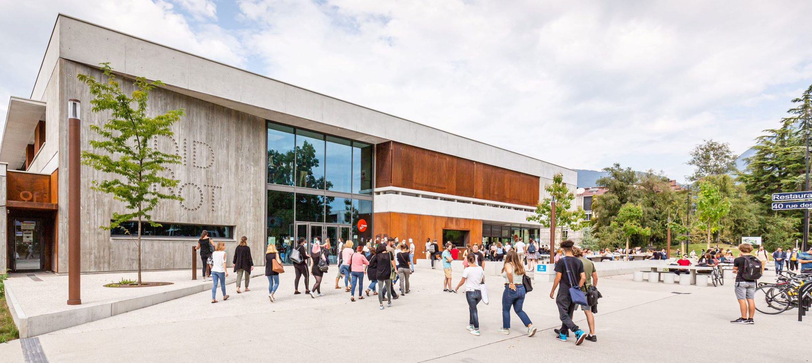

Rush&Krous est une initiative unique qui permet aux étudiants de découvrir la richesse des régions françaises tout en bénéficiant des infrastructures du Krous. Grâce à nos voyages, explorez différentes villes étudiantes, goûtez à des spécialités locales dans les restaurants universitaires et rencontrez des étudiants de toute la France.
Voyages culturels : Partez à la découverte du patrimoine historique et artistique des villes où le Krous est présent.
Séjours gastronomiques : Profitez des spécialités culinaires locales dans nos restaurants universitaires.
Échanges étudiants : Rencontrez des étudiants d'autres régions et partagez vos expériences.
Éco-découvertes : Voyagez de manière responsable et explorez des initiatives durables mises en place par les Krous.
Vous cherchez un voyage en particulier ? Utilisez la recherche rapide pour trouver la destination qui vous convient :